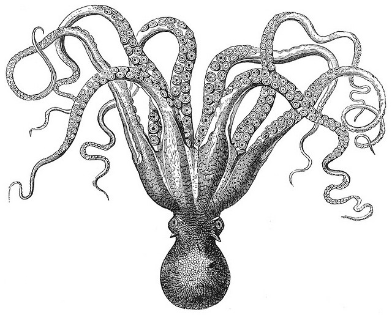

octal.me
This is a personal website for me, Joe Parker. I am a devotee of computers, security, music, BBQ, cooking, and beer. I work at Still Solutions and MoxyBox as the CTO and Vice President, respectively. You can find my contact information below if you have any questions or thoughts you would like to share. Extra points will be awarded for GPG encrypted emails. Thanks.
Links
- Twitter: https://twitter.com/joesparker
- Scripts: https://gist.github.com/joesparker
- Email: joe@octal.me
- GPG Public Key: https://otcal.me/pub_key.asc
Creative Commons Image Credits:
Ocotopus image
Background tesselation